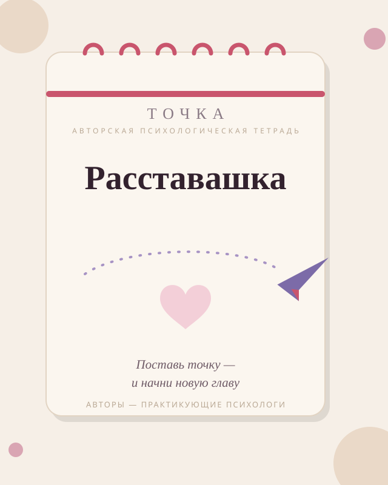

Бережная программа из практик, упражнений и метафорических карт — создана практикующими психологами, чтобы помочь тебе прожить расставание без разрушения себя.
120 страниц практик · 30 метафорических карт · доставка по всей России

Если хотя бы два пункта про тебя — «Расставашка» создана для тебя
Навязчивые мысли, прокручивание диалогов и желание написать «в последний раз».
Открываю его соцсети по десять раз в день и ищу повод «случайно» встретиться.
Будущее кажется туманным, а всё, что радовало раньше, больше не приносит сил.
«Со мной что-то не так», «я недостаточно хороша» — знакомый внутренний голос.
Тяжёлые эмоции накрывают волной, и непонятно, как с ними быть дальше.
Страшно впустить кого-то нового — вдруг история повторится.
6 частей — путь от острой боли до веры в новую любовь
Точка опоры: как пережить первые недели, когда эмоции переполняют, и не потерять себя.
Практики против навязчивых мыслей и желания вернуться к бывшему.
Как освободиться от соцсетей бывшего и перестать искать поводы для встречи.
Возвращаем уверенность: работа с самоценностью и чувством неполноценности.
Экологично проживаем тяжёлые эмоции и отпускаем их через письменные практики.
Формируем образ желаемого будущего и возвращаем веру в любовь.
Никакой воды — только практики с доказанной эффективностью
Письменные техники из доказательной психологии: 80% тетради — это упражнения, а не теория.
Мягкие наводящие вопросы и подсказки психологов на каждой странице.
Подключаем образное мышление, чтобы шагнуть глубже в свои чувства.
Нескучный, бережный темп — ты сама выбираешь, с чем работать сегодня.
Просто, быстро и в любой точке России
Добавь тетрадь в корзину, укажи email — займёт меньше минуты.
Безопасная оплата через Robokassa: карты, СБП, электронные кошельки.
После оплаты пришлём письмо и уточним удобную доставку: СДЭК или Почта России.
«Расставашка» написана практикующими психологами на основе реальной работы с клиентами, а не сгенерирована нейросетью
Средняя оценка 4,9 из 5 по отзывам покупательниц
«Заполняла тетрадь три недели — и это единственное, что держало меня на плаву. Через месяц поняла, что больше не открываю его страницу в соцсетях. Просто не хочется».
«Скептически относилась к „тетрадям для души“, но здесь реально всё по делу: практики, вопросы, никакого „просто отпусти“. Работает медленно, но верно».
«Купила после развода. Метафорические карты — отдельная любовь: именно с ними у меня случился первый „щелчок“ и слёзы облегчения».
«Расставашка» — это печатная тетрадь формата А5 на 120 страниц. Мы отправляем её СДЭКом или Почтой России в любую точку страны.
После оплаты мы напишем тебе на email и уточним удобный способ доставки. Отправляем заказы в течение 1–2 рабочих дней, доставка занимает 2–7 дней в зависимости от региона. Оплата проходит онлайн через Robokassa: банковской картой, через СБП или электронными кошельками.
Ты сама задаёшь темп. В среднем девушки проходят тетрадь за 4–6 недель, уделяя ей 15–20 минут в день. Можно двигаться быстрее или медленнее — это твоя история.
Да. Практики работают и со «свежими» расставаниями, и с давними историями, которые всё ещё цепляют. Многие покупательницы говорят, что именно с «Расставашкой» наконец-то закрыли гештальт многолетней давности.
Если в течение 14 дней с момента получения ты поймёшь, что формат не подошёл, напиши нам — постараемся решить вопрос: от замены до возврата.
«Расставашка» бережно проведёт тебя от боли и растерянности к спокойствию и вере в новую любовь.
Купить «Расставашку» за 3 990 ₽7 800 ₽ цена со скидкой 49% · доставка по всей России